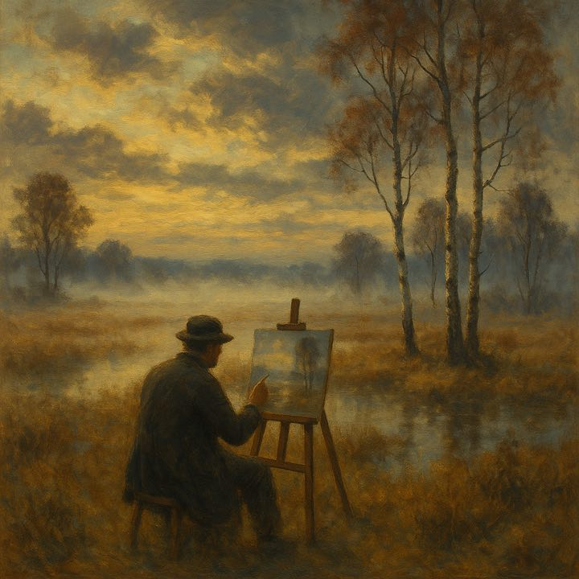
Der Insider-Guide Ihrer Gastgeber
Kunst, Moor und die schönsten Orte des Künstlerdorfes — zusammengestellt von zwei Künstlern, die hier leben.
Moin!
Wir sind Markus und Anna — Maler, Gastgeber und seit vielen Jahren verliebt in dieses Dorf am Rand des Teufelsmoors. In unserem Haus Im Schluh vermieten wir vier Ferienwohnungen, betreiben die Galerie SCHLUH und arbeiten in unserem Atelier.
Auf den folgenden Seiten haben wir aufgeschrieben, was wir unseren Gästen sonst am Frühstückstisch oder über den Gartenzaun erzählen: wo das Licht am schönsten ist, wo man gut isst, was man auslassen kann — und was auf keinen Fall.
Nehmen Sie sich Zeit. Worpswede ist kein Ort zum Abhaken, sondern einer zum Ankommen.
Ihr Willkommensgeschenk
10% Rabatt auf Ihre erste Direktbuchung auf
ferienwohnung-in-worpswede.de — einfach bei der Buchung angeben.
Herzlich, Markus & Anna
Übersicht
Zum Einstieg
1889 kamen drei junge Maler — Fritz Mackensen, Otto Modersohn und Hans am Ende — in dieses Bauerndorf am Teufelsmoor und blieben. Sie waren ergriffen von der kargen Weite, den dramatischen Wolkenhimmeln und dem besonderen Licht der Dämmerung. „Die Natur ist unsere Lehrerin", notierte Mackensen — und eine der berühmtesten Künstlerkolonien Europas war geboren.
Bald folgten Fritz Overbeck, der Jugendstil-Visionär Heinrich Vogeler und Paula Modersohn-Becker, heute die berühmteste Malerin des Ortes. Auch der Dichter Rainer Maria Rilke gehörte zum engsten Kreis und heiratete die Bildhauerin Clara Westhoff.
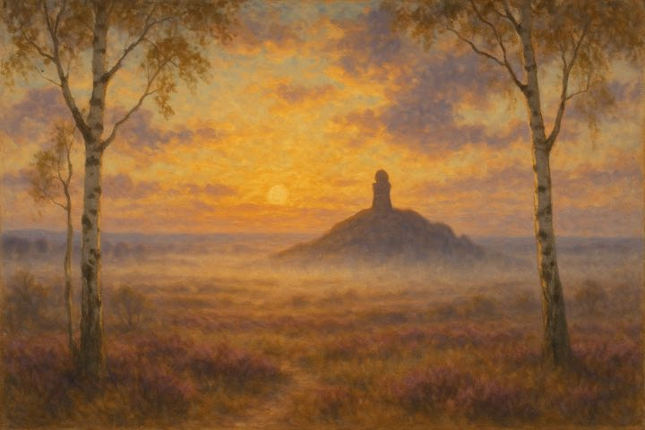
Und heute? Worpswede ist kein Freilichtmuseum, sondern lebendiger denn je: Rund 150 Künstlerinnen, Künstler und Kunsthandwerker leben und arbeiten hier — mit Ateliers, Galerien, Werkstätten und einer erstaunlichen Kulturdichte für ein Dorf dieser Größe. Wir zwei gehören dazu.
Kunst
Vogelers Wohnhaus und Atelier, vom Bauernhaus zum Jugendstil-Gesamtkunstwerk umgebaut — das berühmteste Gebäude Worpswedes und unser Pflichttipp Nummer eins. Für Kinder gibt es eine Entdeckerrallye.
Bernhard Hoetgers expressionistischer Museumsbau von 1927 — schon die Architektur lohnt den Besuch. Wechselnde Ausstellungen zur Worpsweder Kunst von den Anfängen bis heute.
Das Museum zu Martha Vogeler mit Textilwerkstatt und Wohnkultur — reetgedeckt, verwunschen und nur ein paar Schritte von unserer Haustür entfernt.
Otto Modersohns Leben in authentischer Wohnatmosphäre — und in der Kunsthalle Wechselausstellungen mit Klassikern und Zeitgenossen.
Unser Tipp: Die Kombikarte für die Worpsweder Museen lohnt sich fast immer — und verteilen Sie die Besuche auf mehrere Tage. Kunst braucht Pausen. Aktuelle Zeiten und Preise: worpswede-museen.de
Natur
Das Teufelsmoor ist der Grund, warum es Worpswede gibt: eine weite, stille Niederungslandschaft, die seit dem 18. Jahrhundert von Moorbauern kultiviert wurde und heute Heimat für Kraniche, Reiher und unzählige Wolkenstimmungen ist.
Der Weyerberg (54 m) ist der Hausberg des Dorfes — kein Gipfel, aber eine liebenswerte Anhöhe mit Blick über die Hammeniederung. In 15–20 Minuten sind Sie oben; am schönsten zu Sonnenauf- oder -untergang.
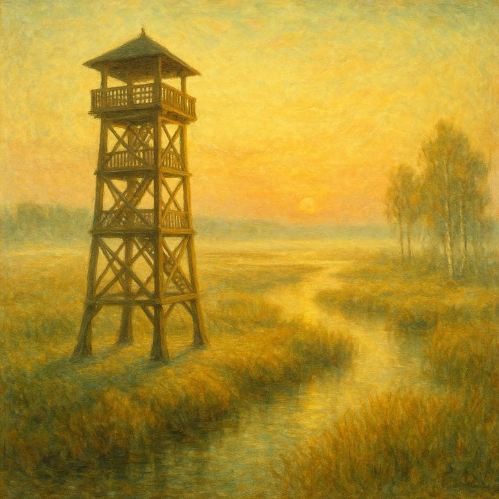
Die Hammeniederung bei Neu Helgoland im Morgenlicht
Unser Lieblingsort: der Aussichtsturm bei Neu Helgoland an der Hamme (frei zugänglich, Spende erbeten). Von oben sehen Sie das Moor, den Fluss, die Kähne — und abends einen der besten Sonnenuntergänge Norddeutschlands. Die Hammehütte nebenan versorgt Sie mit Kuchen und regionaler Küche auf der Panorama-Terrasse.
Erlebnis
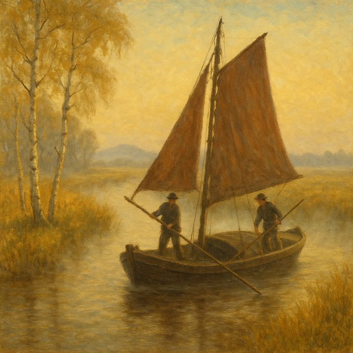
Zwei Jahrhunderte lang waren die schwarzen Eichenkähne mit braunen Segeln die einzigen Verkehrsmittel im Moor — die Bauern schipperten ihren Torf bis nach Bremen. Heute gleiten die nachgebauten Kähne leise (meist elektrisch) über die Hamme, während der Skipper Geschichten „ut ole Tieden" erzählt.
Für uns die schönste Art, diese Landschaft zu begreifen: vom Wasser aus, im Tempo von damals.
Buchung: z.B. Worpsweder Torfschifffahrt (worpsweder-torfschifffahrt.de) oder über die Tourist-Info, Bergstraße 13, Tel. 04792 935820.
Naturschauspiel
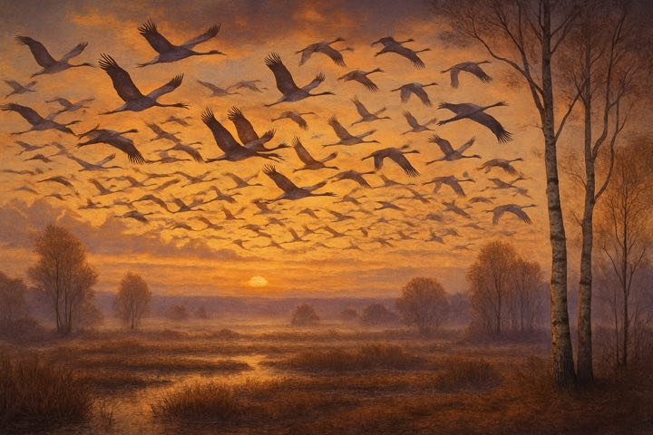
Zweimal im Jahr wird das Teufelsmoor zur Bühne für eines der großartigsten Naturschauspiele Norddeutschlands: Im März/April und vor allem von September bis November rasten hier Tausende Kraniche — in Spitzenzeiten bis zu 25.000 Vögel.
Das Ritual ist immer gleich: Tagsüber fressen die „Vögel des Glücks" auf den abgeernteten Feldern, abends fliegen sie in großen, trompetenden Formationen zu ihren Schlafplätzen im Moor. Dieser abendliche Einflug — Hunderte Silhouetten vor glühendem Himmel — ist ein Gänsehautmoment, den unsere Gäste nie vergessen.
Genuss · I
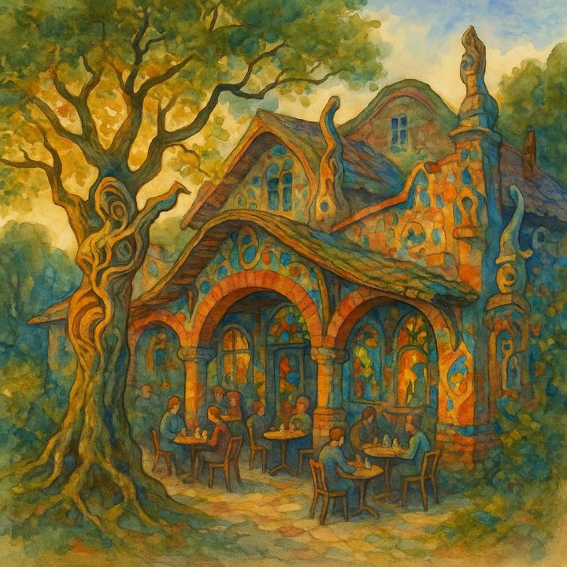
Das Kaffee Worpswede — im Volksmund „Café Verrückt"
Bernhard Hoetgers expressionistisches Café von 1927 — ein Gebäude fast ohne rechte Winkel. Auf einem Balken antwortete Hoetger den Spöttern: „Wer't nicht ehrt, ist selbst verrückt." Zuletzt in Sanierung — aber allein die Architektur von außen ist den Weg wert. Vorher den aktuellen Stand prüfen.
In der Bergstraße: Frühstück, hausgemachte Torten und wechselnde Kunstausstellungen — Kaffeehaus und Galerie in einem.
Kuchen vom eigenen Konditor mit dem besten Terrassenblick über die Hammeniederung — perfekt nach Turm oder Torfkahn.
Genuss · II
Findorffstraße 3 — regionale, saisonale Küche mit Leichtigkeit: Fisch, Steaks und gute vegetarische Optionen. Der Name ist natürlich eine Verbeugung vor Paula Modersohn-Becker.
Findorffstraße 21: indisch-internationale Fusion — und ein originales Künstlerzimmer von Heinrich Vogeler. Wo sonst gibt es Curry im Jugendstil?
Moderne Küche im Jugendstil-Bahnhofsgebäude, das Heinrich Vogeler gestaltet hat — Ankommen wie vor hundert Jahren.
Kreativ-bodenständige Küche am Hemberg — und griechisch-mediterranes Flair mit Tavernen-Abenden bei Pella.
Insider-Regel: Sonntagmittag in der Saison wird es überall voll — reservieren Sie, oder essen Sie einfach dienstags bis donnerstags. Dann gehört das Dorf fast Ihnen.
Aktiv
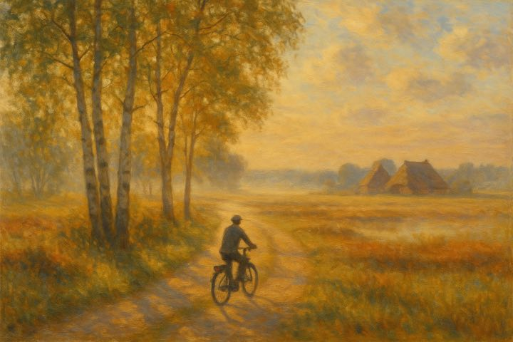
Flaches Land, stille Feldwege, Birkenalleen und alle paar Kilometer eine Einkehr: Das Teufelsmoor ist wie gemacht fürs Fahrrad. Die schönsten Wege sind nie die Hauptstraßen — sondern die Wirtschaftswege zwischen den Dörfern, wo Sie nur Wind und Gänse hören.
Kein Rad dabei? Fahrradladen Eyl, Findorffstraße 28 (Tel. 04792 2323) — City- und E-Bikes, Kinderräder, Anhänger. E-Bikes am besten reservieren, besonders am Wochenende.
Für die Kamera
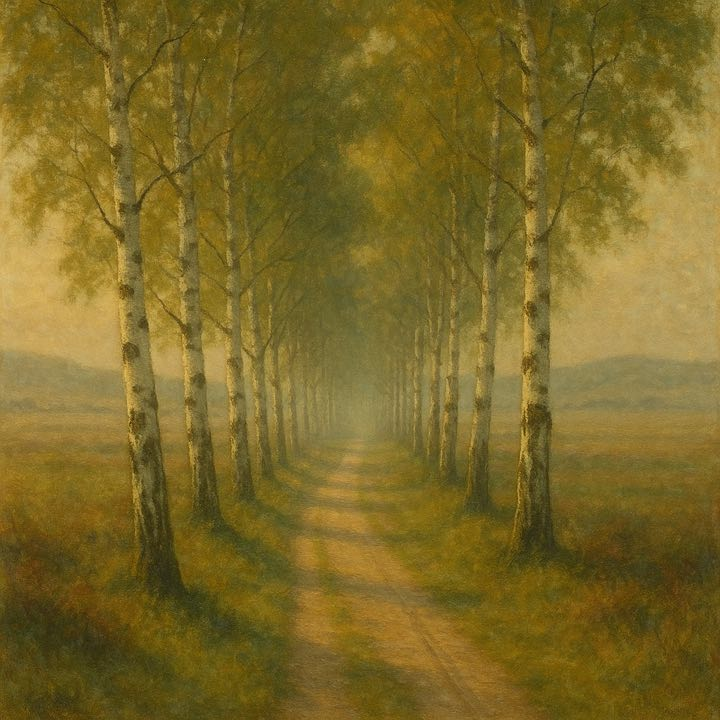
Die Birkenallee — das Signature-Motiv Worpswedes
Die goldene Regel der Moorkünstler gilt auch fürs Handy: Das beste Licht gibt es hier morgens und zur Dämmerung — genau deshalb kamen 1889 die Maler.
Familie
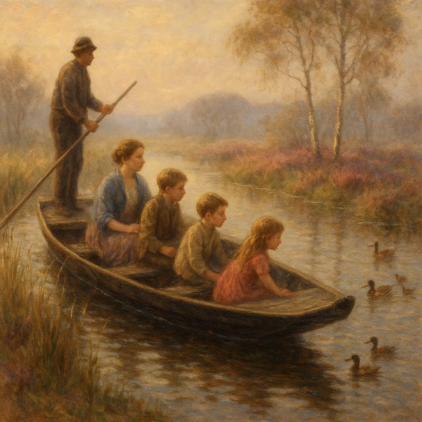
Und bei Regen? Museen mit Rallye, Malkurse für Kinder (Barkenhoff), Kuchen essen — oder Gummistiefel an: Das Moor ist bei Nieselwetter am stimmungsvollsten.
Abendprogramm
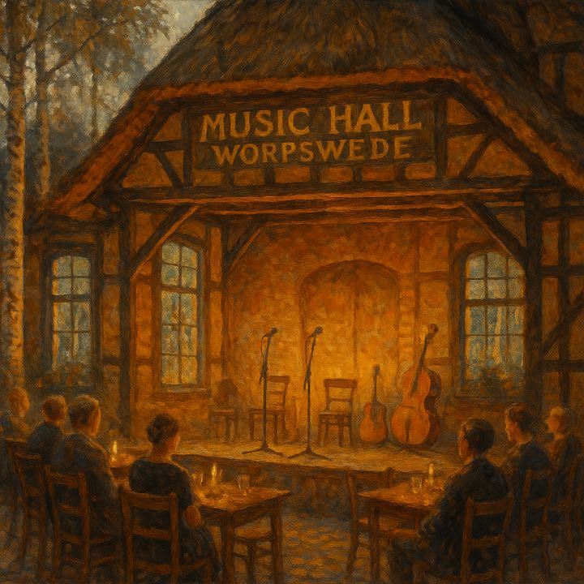
In der Findorffstraße 21 steht eine der ungewöhnlichsten Kultureinrichtungen Norddeutschlands: Im historischen Dorfsaal eines reetgedeckten Hauses aus dem 18. Jahrhundert veranstaltet ein ehrenamtlicher Verein seit 1994 rund 60–70 Konzerte im Jahr — Jazz, Blues, Rock, Chanson, Kabarett.
Auf dieser kleinen Bühne standen schon John Mayall, Eric Burdon, The Temptations und Maceo Parker. Ein Konzertabend hier gehört zu den schönsten Überraschungen, die Worpswede zu bieten hat.
Praktisch für unsere Gäste: Unsere Wohnung „Atelier von :D@NNY" liegt in unmittelbarer Nähe zur Music Hall — Konzert und Bett trennen nur ein paar Schritte. Programm: musichall-worpswede.de
Zum Mitnehmen
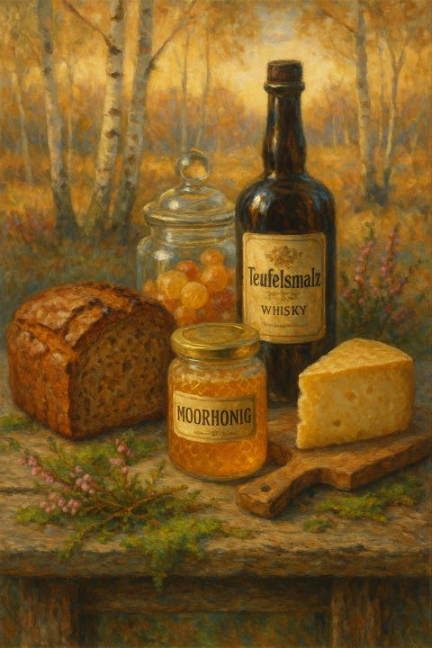
Grundsatz: Direkt bei Erzeugern und in Hofläden kaufen — bessere Qualität als im Souvenirregal, und das Geld bleibt im Dorf.
Planung
Ehrliche Antwort: Es gibt keine schlechte. Aber jede Jahreszeit hat ihr eigenes Worpswede.
Frisches Birkengrün, Kranichzug im März/April, perfektes Fotolicht — und Ruhe vor dem Sommertrubel.
Hochsaison: Offene Ateliers im Juli, Torfkahnfahrten, Terrassenabende, hell bis 22 Uhr. Früh buchen — und Mückenschutz einpacken.
Unsere Geheimtipp-Saison: goldene Birken, Morgennebel, bis zu 25.000 Kraniche — und leere Museen. Bestes Licht des Jahres.
Raureif, Stille und Kunst ohne Gedränge. Das Moor in Schwarz-Weiß — plus Kunsthandwerkermarkt in der Adventszeit.
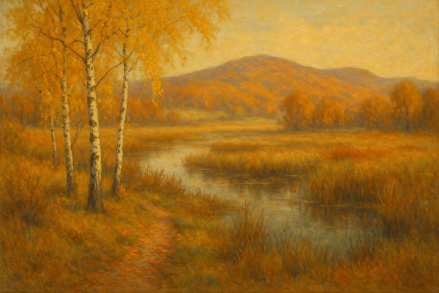
Kompakt
Gut zu wissen
Von Bremen: 30 km, ca. 35–45 Min. — A27 bis Abfahrt Lilienthal oder Bremen-Nord, dann ausgeschildert. Von Hamburg: ca. 1,5–2 Std. über die A1. Öffentlich: Bahn/Bus über Bremen oder Osterholz-Scharmbeck.
P Bergstraße (hinter der Tourist-Info): kostenlos, 4 Std. mit Parkscheibe. P Bahnhof (Bahnhofstraße 17): kostenlos, ohne Limit. Als unsere Gäste parken Sie natürlich direkt bei uns vor der Tür.
Bergstraße 13 · Tel. 04792 935820 · worpswede-touristik.de
Ihre Gastgeber
Markus Lippeck & Anna Schill
Ferienwohnungen Worpswede · Galerie SCHLUH · Im Schluh 71, 27721 Worpswede
Tel. 0162 641 26 32 · markus@lippeck.de
ferienwohnung-in-worpswede.de · mas.art
Ihr Code für 10% Direktbucher-Rabatt: WILLKOMMEN10
Alle Angaben nach bestem Wissen, ohne Gewähr — Öffnungszeiten und Preise bitte aktuell prüfen. Illustrationen: computergeneriert, inspiriert von der Malerei der Worpsweder Künstlerkolonie. © Markus Lippeck & Anna Schill, Worpswede.